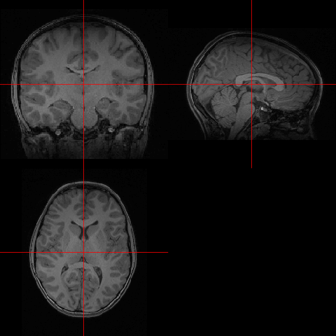
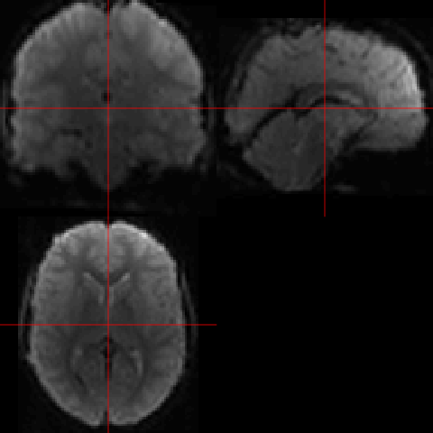
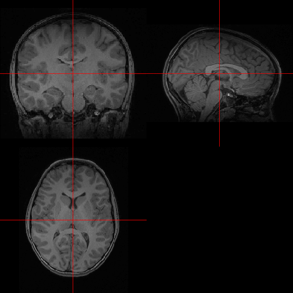
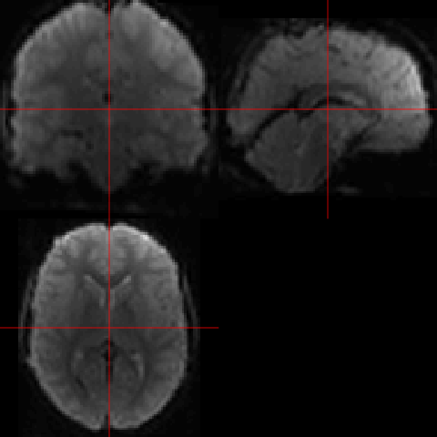

Regaining control of false findings in feature selection, classification, and prediction on neuroimaging and genomics data
Oral defense of a dissertation submitted to the Bioinnovation PhD Program of the School of Science and Engineering of Tulane University in partial fulfillment of the requirements for the PhD degree by
Alexej Gossmann
July 11, 2018
Precision Medicine
Inter-personal diversity in the patients' biology
⇾ differences in disease susceptibility/progression
⇾ differences in treatment efficacy
⇾ "personalized" treatment plans.
Precision Medicine
- New drugs and devices targeting specific subpopulations (or even individuals).
- No more treatment based on trial-and-error.
- ↑ Quality of healthcare
- ↓ Treatment time and cost.
Precision Medicine
Made possible by:- Big data including genomics and neuroimaging.
- Computational methods including machine learning and modern statistics.


Source: Images by Thomas Shafee [CC BY 4.0] via Wikimedia Commons.
- Structural MRI: anatomical structure of the brain.
- Functional MRI: brain activity associated with blood flow related to energy use by brain cells.
.gif) 



- Animation by Dwayne Reed at English Wikipedia [CC BY-SA 3.0] via Wikimedia Commons.
-
A randomly chosen subject from the Philadelphia Neurodevelopmental Cohort:
- T1-weighted MRI before preprocessing ($192\times 256 \times 160$ voxels).
- fMRI after preprocessing ($79\times 95\times 79$ voxels at $>200$ time points).
.gif){kind=link}
Precision Med. & Mental Disorders

- Neuroimaging as an endophenotype.[1-2]
- Use of fMRI to monitor & guide drug treatment.[3-5]
[1]: Hashimoto et. al., 2015, [2]: Poline et. al., 2015, [3]: Weickert et al., 2004, [4]: Apud et al., 2007, [5]: Goldstein-Piekarski et al., 2016.
Models
$$y = f(x\subscript{1}, x\subscript{2}, \ldots, x\subscript{p}) + \varepsilon,$$ where $x\subscript{1}, x\subscript{2}, \ldots, x\subscript{p}$ are predictor variables, $\varepsilon$ is random noise, and $y$ is the phenotype.
Human DNA $\approx 3\cdot 10^9$ base pairs ⇝ vast majority not related to phenotype of interest ⇝ sparse models $$\Rightarrow y = f(x\subscript{a\subscript{1}}, x\subscript{a\subscript{2}}, \ldots, x\subscript{a\subscript{m}}) + \varepsilon,$$ where $\{a\subscript{1}, a\subscript{2}, \ldots, a\subscript{m}\} \subset \{1,2,\ldots,p\}$ is a small subset ($m \ll p$).
Sparse Models

The two-faced model selection problem
Prediction: Feature selection:
Find best predictions for $y$. Which $x\subscript{j}$ are predictive?
Two types of false findings
False positives. False discoveries.
Overfitting. Curse of dimensionality.
Aims
Establish guarantees on...
- false discoveries in feature selection,
- false predictions on new data (generalization)
...for types of methods commonly used in the analysis of genomic and neuroimaging data.
Resources and collaborators
- The Multiscale Bioimaging and Bioinformatics Laboratory (MBB) at Tulane University.
- Tulane Center for Bioinformatics and Genomics (CBG).
- FDA, Office of Science and Engineering, Division of Imaging, Diagnostics, and Software Reliability.
- Other: The Mind Research Network, University of Wrocław, Indiana University Bloomington, University of Tennessee Health Science Center.
Feature selection in genomics and neuroimaging
- Prediction of a phenotype based on few features.
↳ Inexpensive diagnosis. - Elimination of noisy or redundant features.
↳ More accurate prediction. - Data-generated hypotheses.
↳ Biological insights.
Multiple hypotheses testing
Feature selection as testing of hypotheses: $$H\subscript{i} : \beta\subscript{i} = 0, \quad i = 1,\ldots,p.$$
- $\beta\subscript{i} := $ effect of $i$th feature.
- $R := $ number of rejected hypotheses.
- $V := $ number of false rejections (i.e., Type I errors).
- Family-wise error rate: $\mathrm{FWER} = \mathbb{P}(V \geq 1)$.(*)
- False discovery rate: $\mathrm{FDR} = \mathbb{E}\left( \frac{V}{\min\{R, 1\}} \right)$.(**)
(*): E.g., Bonferroni, Holm (1979), Hommel (1988).
(**): E.g., Benjamini-Hochberg (1995), Benjamini-Yukutieli (2001).
Sparse regression
$$\hat{\boldsymbol{\beta}} = \arg\min\subscript{\mathbf{b}\in\mathbb{R}^p} \frac{1}{2} \lVert\mathbf{y} - X\mathbf{b}\rVert\subscript{2}^2 + \lambda\lVert\mathbf{b}\rVert\subscript{1}.$$
- $\mathbf{y} = f(X) + \boldsymbol{\varepsilon} \approx f(X) = X\boldsymbol{\beta} \approx X\hat{\boldsymbol{\beta}}$.
- Yields a sparse solution $\hat{\boldsymbol{\beta}}$.
- Computationally efficient (convex).
- Very useful in practice.
- Problem: how sparse should $\hat{\boldsymbol{\beta}}$ be?
- Problem: how to do statistical inference on $\hat{\boldsymbol{\beta}}$?
Sorted L-One Penalized Estimation[1]
$\hat{\boldsymbol{\beta}}\subscript{\mathrm{SLOPE}} = \mathrm{argmin}\subscript{\mathbf{b}\in\mathbb{R}^p} \frac{1}{2} \lVert \mathbf{y} - X\mathbf{b}\rVert\subscript{2}^2 + \sum\subscript{i=1}^p \lambda\subscript{i} |\mathbf{b}|\subscript{(i)},$
where $\lambda\subscript{1} \geq \lambda\subscript{2} \geq \ldots \geq \lambda\subscript{p} \geq 0$; and $|b|\subscript{(1)} \geq |b|\subscript{(2)} \geq \ldots \geq |b|\subscript{(p)}$ denotes the order statistic of the magnitudes of the vector $\mathbf{b}\in\mathbb{R}^p$.
Given $q\in(0,1)$, there is a procedure to choose $\boldsymbol{\lambda}$ s.t. $\mathrm{FDR}(\hat{\boldsymbol{\beta}}\subscript{\mathrm{SLOPE}}) \leq q$ is guaranteed. ...if the explanatory variables have very small pair-wise correlations. ← typically not the case in genomics.
[1]: Bogdan et. al., Annals Appl Stat, 2015.
Group SLOPE Motivation
- Divide the data into groups by correlation. ← Often possible for biological data.
- Then select/drop entire groups rather than individual variables.
- Redefine FDR w.r.t. groups: gFDR.
Group SLOPE
- $\mathbf{y} = X\boldsymbol{\beta} + \boldsymbol{\varepsilon}$, $X\in\mathbb{R}^{n\times p}$, $\boldsymbol{\beta}\in\mathbb{R}^p$, $\boldsymbol{\varepsilon}\sim\mathrm{N}(0, \sigma\subscript{\varepsilon}^2 I)$.
- $\boldsymbol{\beta}$ divided into $J$ groups of sizes $p_1, p_2, \cdots, p_J$, i.e. $\boldsymbol{\beta} = (\boldsymbol{\beta}_1^T, \boldsymbol{\beta}_2^T, \ldots, \boldsymbol{\beta}_J^T)^T$ with $\boldsymbol{\beta}_i \in \mathbb{R}^{p_i}$.
$$\min\subscript{\mathbf{b}\in\mathbb{R}^p} \frac{1}{2} \left\lVert\mathbf{y} - X\mathbf{b}\right\rVert\subscript{2}^2 + \sum\subscript{i=1}^J \lambda\subscript{i} \sqrt{p\subscript{(i)}}\left\lVert X\subscript{(i)} \mathbf{b}\subscript{(i)}\right\rVert\subscript{2},$$ where $\sqrt{p\subscript{(1)}}\left\lVert X\subscript{(1)} \mathbf{b}\subscript{(1)} \right\rVert\subscript{2} \geq \sqrt{p\subscript{(2)}}\left\lVert X\subscript{(2)} \mathbf{b}\subscript{(2)} \right\rVert\subscript{2} \geq \ldots$
Computational algorithms
The minimization problem can be rewritten as a sum of a convex function $f\subscript{2}$ and a differentiable convex function $f\subscript{1}$ with a Lipschitz continuous derivative:
$\min\subscript{\mathbf{c}\in\mathbb{R}^p} f\subscript{1}(\mathbf{c}) + f\subscript{2}(\mathbf{c}).$
Different ways to find the global solution:
- Fast iterative shrinkage-thresholding algorithm (FISTA) — a proximal gradient method used in [1-3].
- Alternating direction method of multipliers (ADMM) — derived in the thesis.
[1]: Gossmann et. al., 2015. [2]: Brzyski, Gossmann, et. al., 2018. [3]: Gossmann et. al., 2018.

Runtime comparison of FISTA vs. ADMM optimization algorithms for Group SLOPE
(Figure 3.2 in the thesis).
Group SLOPE - Theoretical guarantees
- Given a user-specified $q \in (0, 1)$,
we show how to construct $\boldsymbol{\lambda}$ such that $\mathrm{gFDR} \leq q$.[1-3]
Different approaches: theoretical for orthogonal designs[2-3], heuristic based on theory for general designs[1-2], Monte Carlo based[3].
Confirmed with extensive simulation studies on synthetic and real data.[1-3] - Asymptotically minimax estimation.[2]
[1]: Gossmann et. al., 2015. [2]: Brzyski, Gossmann, et. al., 2018. [3]: Gossmann et. al., 2018.
Application - Framingham Cohort
- SNP data for 8915 subjects.
- 1771 subjects have corresponding spine BMD measurements.
- The remaining ~7000 subjects used to group SNPs.
$X$ with dimensions $1771 \times 117933$, consisting of 6403 groups of average size 18.42 (median size 2).
Canonical Correlation Analysis

Classical canonical correlation analysis
$$\mathrm{maximize}\subscript{u\in\mathbb{R}^p, v\in\mathbb{R}^q} \widehat{\mathrm{Cov}}(Xu, Yv) = \frac{1}{n} u^T X^T Y v,$$ $$\mathrm{subject\,to} \quad \widehat{\mathrm{Var}}(Xu) = 1, \widehat{\mathrm{Var}}(Yv) = 1.$$ [Hotelling, 1936]
The problem is degenerate if $n \leq \mathrm{max}\left( p, q \right)$.
Sparse CCA[1-2]
$\mathrm{maximize}\subscript{\mathbf{u}\in\mathbb{R}^p, \mathbf{v}\in\mathbb{R}^q} \frac{1}{n} \mathbf{u}^T X^T Y \mathbf{v},$
subject to
$\lVert \mathbf{u} \rVert_2^2 \leq 1, \lVert \mathbf{v} \rVert_2^2 \leq 1, \lVert \mathbf{u} \rVert_1 \leq c_1, \lVert \mathbf{v} \rVert_1 \leq c_2$.
- Unique solution even when $p_X, p_Y \gg n$.
- Selection of the sparsity parameters remains a challenging problem.
[1]: Witten et. al., 2009, [2]: Parkhomenko et. al., 2009.
Sparse CCA
Select sparsity parameters in a data-driven fashion, such that FDR is controlled.
⇾ False discovery proportions: FDP(u) = 1/3 and FDP(v) = 1/4. ⇾ FDR = E(FDP).
SlopeCCA:
$\mathrm{minimize}\subscript{\fatu\in\R^p, \fatv\in\R^q}\, \left\{ -\fatu^T X^T Y \fatv + \sqrt{n} J\subscript{\fatlambda^u}(\fatu) + \sqrt{n} J\subscript{\fatlambda^v}(\fatv) \right\}$,
subject to $\lVert\fatu\rVert\subscript{2}^2 \leq 1, \lVert\fatv\rVert\subscript{2}^2 \leq 1$.
gSlopeCCA:
$\mathrm{minimize}\subscript{\fatu\in\R^p, \fatv\in\R^q} \left\{ -\fatu^T X^T Y \fatv + \sqrt{n} J\subscript{\fatlambda^u}\left( \left( \lVert \fatu\subscript{1} \rVert\subscript{2}, \dots\right)^T \right) + \sqrt{n} J\subscript{\fatlambda^v}\left( \left( \lVert \fatv\subscript{1} \rVert\subscript{2}, \dots \right)^T \right) \right\}$, subject to $\lVert\fatu\rVert\subscript{2}^2 \leq 1, \lVert\fatv\rVert\subscript{2}^2 \leq 1$.
Where $J\subscript{\fatlambda}(\fatu) = \Sigma\subscript{i=1}^p \lambda\subscript{i} |u|\subscript{(i)}$ is the Sorted L1 Norm.
SlopeCCA and gSlopeCCA - theoretical guarantees
Asymptotic FDR guarantees if $Cov(X)$ and $Cov(Y)$ are block-diagonal.
($Cov(X, Y)$ can be of arbitrary shape)

Application example: Results of gSlopeCCA applied to methylation and mRNA data from 12 diseases available from the Cancer Genome Atlas data.
FDR-corrected sparse CCA
A split-sample, two-step procedure:
- Split the data in two parts.
- Using the first subsample: obtain initial estimates $\hat{\fatu}^{(0)}$ and $\hat{\fatv}^{(0)}$ using conventional sparse CCA.
- Using the second subsample: test hypotheses of the form, $$\mathrm{H}^{(u)}\subscript{i} : u\subscript{i}^{(0)} = 0, \quad \mathrm{H}^{(v)}\subscript{j} : v\subscript{j}^{(0)} = 0,$$ and adjust for multiple comparisons to control the FDR.
FDR-corrected sparse CCA - Theoretical Guarantees
- Equivalence to hypotheses: $$\mathrm{H}^{(u)}\subscript{i} : \left(X^T Y \hat{\fatv}^{(0)}\right)\subscript{i} = 0, \quad \mathrm{H}^{(v)}\subscript{j} : \left(Y^T X \hat{\fatu}^{(0)}\right)\subscript{j} = 0,$$
- After approximating the distribution of $X^T Y \hat{\fatv}^{(0)}$, we can use Benjamini-Hochberg to control FDR.
Confirmed with extensive simulation studies on synthetic and real data.[1]
[1]: Gossmann et. al., IEEE TMI, 2018.
FDR-corrected SCCA - Application
- Diversity in brain activity and brain connectivity in children and adolescents.
- What are the driver genes?
- Relationship to neurodevelopmental and psychiatric disorders.
Dataset
The Philadelphia Neurodevelopmental Cohort (PNC) is a large-scale collaborative study between the Brain Behaviour Laboratory at the University of Pennsylvania and the Children's Hospital of Philadelphia. It contains a fractal $n$-back fMRI task, an emotion identification fMRI task, SNP arrays, and questionnaire data for over 900 adolescents.
Objective
Use sparse CCA to identify the relationships between brain activity, brain connectivity, and genomics.
n-back fMRI vs. SNPs

Selection from $85796$ brain voxels and $60372$ genomic features.
Results validation - n-back fMRI vs. SNPs
- Similar brain regions have been found in other fMRI studies of working memory.
- At least 34 out of the 65 identified genes have been previously associated with various aspects of human cognitive function.
Functional connectivity (FC) vs. SNPs
- Emotion identification task fMRI data transformed to FC measures.
- FDR-corrected sparse CCA solution includes 129 genomic features and 107 FC features.
FC vs. SNPs - Top 10 selected genes
| Gene | Previously studies in association with... |
|---|---|
| DAB1 | Autism, schizophrenia, brain development |
| NAV2 | Brain development |
| WWOX | Cognitive ability, brain development |
| CNTNAP2 | Autism, brain connectivity, brain development, schizophrenia, major depression, cognitive ability (linguistic processing) |
| NELL1 | Brain development |
| PTPRT | Brain development |
| FHIT | Cognitive ability, autism, ADHD |
| MACROD2 | Autism |
| LRP1B | Cognitive function |
| DGKB | Brain development, bipolar disorder |
(for detail see [Gossmann et. al., TMI, 2018])
Another type of false findings
Feature selection with FDR control.
Features can be used to fit a predictive model.
Danger of over-fitting to the local noise in the given dataset, resulting in false predictions on new data.
What to do?
In Machine Learning practice, generally, usage of two independent datasets — "training" and "test" data.
Training data: exploratory analysis, model fitting, parameter tuning, comparison of different machine learning algorithms, feature selection, etc.
$\Longrightarrow$ Adaptive machine learning, risk of overfitting.
Test data: Performance evaluation after the trained machine learning algorithm has been "frozen".
$\Longrightarrow$ Accurate performance measures of the final model, if the test data is used only once.


Idea
Can we obfuscate the test data to avoid overfitting?
Differential privacy.[1]
Promising simulation results.[2-3]
[1]: Dwork, McSherry, Nissim, Smith, 2006.
[2]: Dwork et. al., Science, 2015.
[3]: Gossmann et. al., SPIE 2018.
Next
Investigation of the overfitting behavior resulting from the use of modern "black box" machine learning algorithms.
Apply our test data reuse method to real neuroimaging and genomic data.
Parts of this work appear in:
- G.A., Cao, S., & Wang, Y.-P. In proceedings of ACM BCB '15. 2015.
- G.A., Cao, S., Brzyski, D., Zhao, L. J., Deng, H. W., & Wang, Y. P. IEEE/ACM TCBB. 2017.
- Brzyski, D., G.A., Su, W., & Bogdan, M. JASA. 2018.
- G.A., Zille, P., Calhoun, V., & Wang, Y.-P. IEEE TMI. 2018.
- G.A., Pezeshk, A., & Sahiner, B. In proceedings of SPIE Medical Imaging '18. 2018.